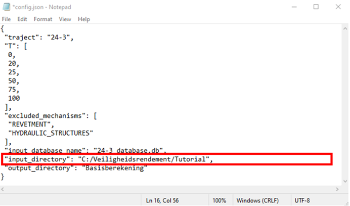
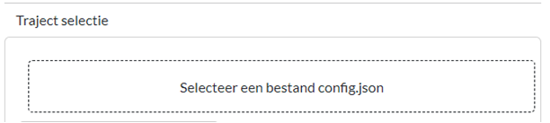
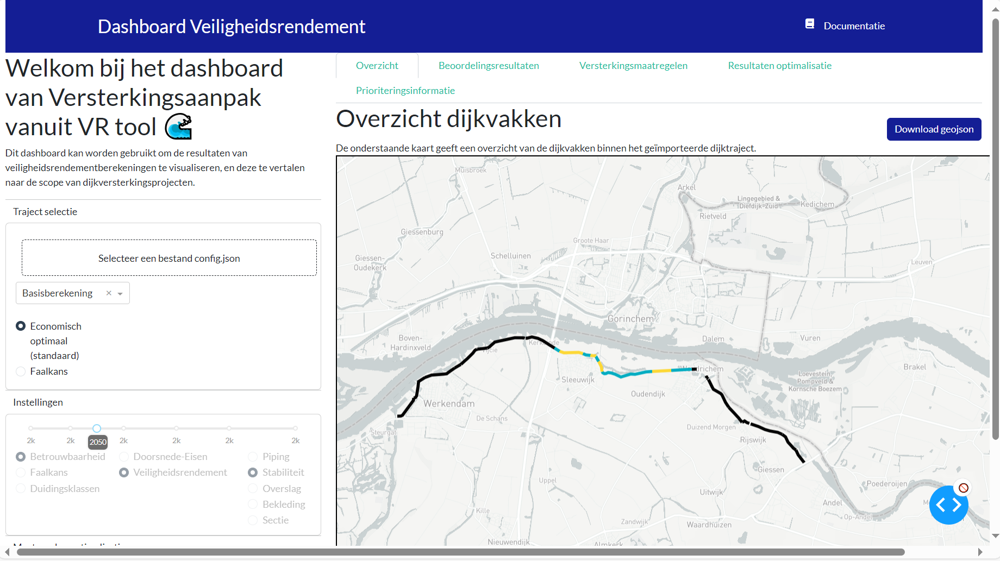

Dashboard - lezen van resultaten#
Nu de VRTool de verschillende berekeningen heeft uitgevoerd kunnen we de rekenresultaten laten zien met het Dashboard.
Run in Anaconda Prompt het volgende commando om het dashboard te starten:
python -m src.index
Het dashboard verschijnt nu automatisch in de browser. Mocht dit niet gebeuren, kopieer dan de URL (http://127.0.0.1:8050/) en open deze in je browser. (Mocht dit niet werken omdat je nog niet alle packages hebt geïnstalleerd, volg dan eerst de installatieinstructies).
Afhankelijk van de folder waarin de bestanden zijn uitgepakt moet de padnaam in het
config.jsonworden aangepast.Open het
config.jsonbestand inNotepadofTextpad. Je ziet nu een tekstbestand met bijinput_directoryde padnaam (‘’C:/…./…’’). Deze padnaam moet gelijk zijn aan de map waarconfig.jsonstaat. Kopieer de padnaam waar de database staat (waarschijnlijk ‘’C:VeiligheidsrendementTutorial’’) en pas dit bijinput_directoryaan. Let op dat je/gebruikt in plaats van\. Er moet geen/op het eind van de padnaam staan.Ga nu naar de browser waar het Dashboard geopend is. Sleep het
config.jsonbestand naar het vak ‘’Traject selectie’’. De resultaten worden nu geladen.
Uiteindelijk ziet het dashboard er als volgt uit:
Oefenvragen dashboard#
Welk dijkvak heeft in 2050 voor de beoordeling een β van 3.54 voor stabiliteit?
klik hier om het antwoord te zien
dijkvak 24.
Op welk dijkvak wordt voor veiligheidsrendement geadviseerd een binnenwaartse grondversterking toe te passen, en wat zijn de dimensies en kosten?
klik hier om het antwoord te zien
Dijkvak 28. De dimensies zijn 0.75 meter kruinverhoging met 10 meter berm. De kosten zijn 0.81 M€.
Wat zijn de kosten voor veiligheidsrendement om in 2050 aan de ondergrens te voldoen?
klik hier om het antwoord te zien
Dit wordt bereikt bij versterkingsstap 14. De kosten zijn €19.57 miljoen. Dit is af te lezen uit de stippellijn in het tabblad 'Resultaten optimalisatie'.
Wat is het meest urgente dijkvak om te versterken?
klik hier om het antwoord te zien
Vak 26 komt als eerste voor in de prioriteringsvolgorde. Dit is te zien in tabblad 'Resultaten optimalisatie', of 'Prioriteringsinformatie'.
Wat kost het versterken van vak 25 met 10 meter berm en 1 meter kruinverhoging (binnenwaarts)?
klik hier om het antwoord te zien
Dit is af te lezen in tabblad 'Maatregelen'. De kosten van deze maatregel zijn €24.45 mln, resulterend in een beta op vakniveau van 3.98 (in 2050).
Wat is het verschil in kosten tussen veiligheidsrendement en doorsnede-eisen op vak 24?
klik hier om het antwoord te zien
Het verschil in kosten is 3.16 M€, waarbij veiligheidsrendement goedkoper is. Dit is te vinden in tabblad 'Versterkingsmaatregelen', door vervolgens 'Kosten' en 'Verschil vr - dsn' te selecteren.
Meer uitleg over de verschillende tabbladen in het dashboard en hoe er verder mee gewerkt kan worden is te vinden in de gebruikershandleiding. Daar valt ook meer te vinden over het rekenen met de VRTOOL.